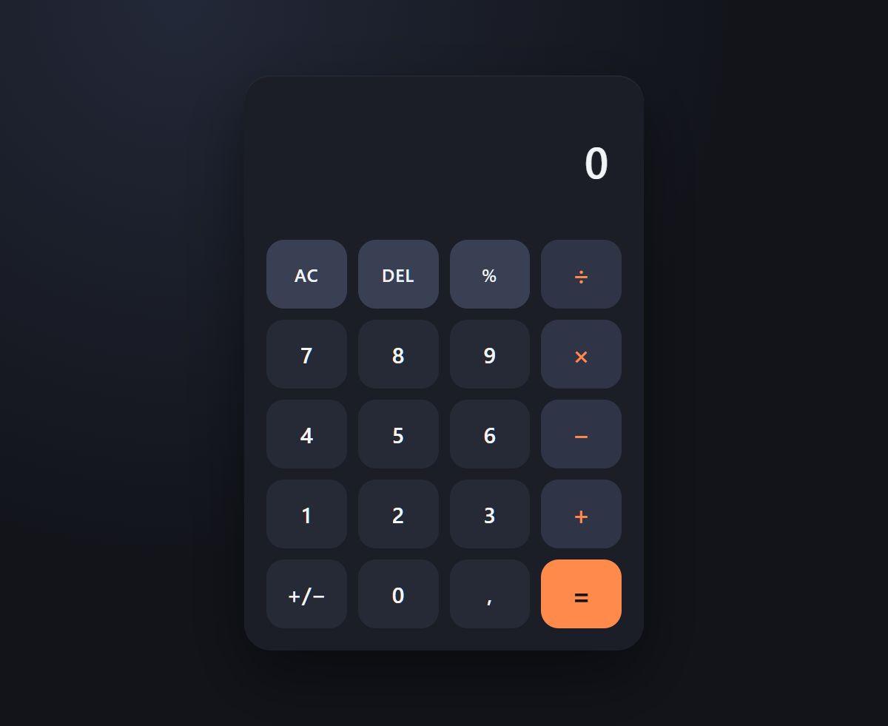

Ringkasan Eksekutif
Gambaran singkat hasil pengerjaan
Project ini menghasilkan sebuah website kalkulator statis yang berjalan sepenuhnya
di sisi klien. Aplikasi terdiri atas tiga berkas sumber terpisah — struktur,
tampilan, dan logika — tanpa framework, tanpa dependensi eksternal, dan tanpa
proses build. Seluruh perhitungan ditangani oleh parser aritmetika buatan sendiri
sehingga tidak menggunakan eval().
HTML, CSS, JS
+ dukungan keyboard
tanpa error konsol
tanpa build tools
Hasil utama
- Operasi aritmetika dasar (
+ − × ÷), persen, desimal, dan pembalikan tanda berfungsi sesuai harapan. - Pratinjau hasil muncul langsung saat mengetik, sehingga pengguna dapat memeriksa ekspresi sebelum menekan =.
- Format angka mengikuti konvensi Indonesia: titik sebagai pemisah ribuan dan koma sebagai desimal.
- Pembagian dengan nol ditangani sebagai kesalahan terkendali, bukan crash atau
Infinity. - Tampilan responsif, ramah keyboard, dan menghormati preferensi reduced motion.
Latar Belakang dan Tujuan
Mengapa project ini dibuat dan apa yang ingin dicapai
Latar belakang
Kalkulator merupakan salah satu aplikasi paling sederhana yang sekaligus menguji banyak konsep dasar pengembangan web: pengelolaan state, penanganan input, validasi, pemformatan angka, hingga aksesibilitas. Membangunnya dari nol tanpa pustaka pihak ketiga memberi pemahaman menyeluruh tentang bagaimana antarmuka, logika, dan penyajian data saling terhubung di browser.
Selain itu, kalkulator berbasis web dapat diakses langsung dari perangkat apa pun tanpa instalasi, sehingga cocok sebagai contoh aplikasi ringan yang siap dipakai.
Tujuan
- Membangun website kalkulator sederhana yang berfungsi penuh di browser modern.
- Memisahkan struktur (
index.html), tampilan (style.css), dan logika (script.js) secara jelas. - Menjamin akurasi perhitungan melalui parser dengan prioritas operator yang benar.
- Menghindari
eval()agar evaluasi ekspresi aman dari eksekusi kode berbahaya. - Menguji seluruh fungsi utama secara terukur dan mendokumentasikan hasilnya.
Batasan
- Hanya operasi aritmetika dasar, persen, dan tanda kurung tidak disertakan.
- Satu ekspresi per perhitungan (tanpa riwayat permanen).
- Tanpa fungsi ilmiah (akar, pangkat, trigonometri).
- Berjalan sepenuhnya di klien; tidak ada server atau basis data.
- Riwayat hanya menyimpan operasi terakhir di memori.
- Target browser: Chrome, Edge, Firefox, dan Safari versi terbaru.
Ruang Lingkup dan Fitur
Kemampuan yang tersedia pada versi 1.0
| Fitur | Deskripsi |
|---|---|
| Operasi dasar | Penjumlahan, pengurangan, perkalian, dan pembagian dengan prioritas operator yang benar. |
| Persen | Tombol % membagi nilai dengan 100, misalnya 50% menjadi 0,5. |
| Desimal | Mendukung angka desimal dengan pembatas koma, serta mencegah dua tanda desimal dalam satu angka. |
| Ubah tanda | Tombol +/− membalik tanda positif/negatif pada angka yang sedang diketik. |
| Pratinjau hasil | Hasil sementara dihitung dan ditampilkan langsung di bawah ekspresi setiap kali input berubah. |
| Riwayat operasi | Setelah tombol =, baris teratas menampilkan ekspresi lengkap beserta hasilnya. |
| Hapus & reset | DEL menghapus satu karakter terakhir; AC mengosongkan seluruh perhitungan. |
| Format angka lokal | Pemisah ribuan dan desimal mengikuti locale id-ID melalui Intl.NumberFormat. |
| Kontrol keyboard | Seluruh fungsi utama dapat diakses tanpa mouse, lengkap dengan umpan balik visual pada tombol (rincian di Bagian 6). |
| Penanganan kesalahan | Pembagian nol dan ekspresi tidak valid ditampilkan sebagai pesan ramah, bukan kegagalan senyap. |
Teknologi dan Struktur Proyek
Perangkat yang digunakan dan organisasi berkas
Teknologi
| Lapisan | Teknologi | Peran |
|---|---|---|
| Struktur | HTML5 | Markup semantik, atribut aria-*, dan tombol ber-data-*. |
| Tampilan | CSS3 | CSS custom properties, CSS Grid, media query, dan animasi transisi. |
| Logika | JavaScript ES6+ | IIFE, strict mode, Intl.NumberFormat, dan event delegation. |
| Pengujian | Chrome + OpenCode | Klik otomatis, event keyboard, pembacaan DOM, dan pemantauan konsol. |
Struktur berkas
kalkulator/
├── index.html # struktur halaman dan tombol
├── style.css # tema gelap dan tata letak responsif
├── script.js # state, parser, render, dan event
├── gambar-tampilan-awal.jpeg # dokumentasi tampilan
├── gambar-perhitungan.jpeg # dokumentasi saat menghitung
├── laporan.html # sumber laporan ini
└── laporan-project-kalkulator.pdf| Berkas | Baris | Ukuran | Tanggung jawab |
|---|---|---|---|
index.html | 41 | 2,3 KB | Layar (display), 20 tombol, pemuatan CSS dan JS. |
style.css | 145 | 2,7 KB | Tema, grid tombol, status fokus, media query. |
script.js | 355 | 11,3 KB | Parser, state, format angka, render, dan event. |
Total kode sumber aplikasi: 541 baris (± 16,3 KB) tanpa satu pun dependensi eksternal.
Arsitektur dan Cara Kerja
Alur data dari input pengguna hingga tampilan hasil
Logika aplikasi dibungkus dalam Immediately Invoked Function Expression (IIFE)
agar tidak mencemari global scope. Seluruh data perhitungan disimpan dalam
satu objek state yang menjadi sumber kebenaran tunggal.
5.1 Manajemen state
const state = {
expression: '', // ekspresi mentah, mis. "12+5"
history: '', // teks riwayat, mis. "12+5 ="
preview: null, // hasil sementara (null = belum ada)
error: '', // pesan kesalahan aktif
justEvaluated: false // true tepat setelah tombol "="
};
Penanda justEvaluated membedakan dua perilaku setelah hasil keluar:
mengetik angka memulai perhitungan baru, sedangkan menekan operator melanjutkan
perhitungan dari hasil sebelumnya — misalnya 2+3= lalu ×2=
menghasilkan 10.
5.2 Parser aritmetika tanpa eval
Ekspresi dipecah menjadi token (angka, operator, persen) lalu diurai dengan
recursive descent yang menerapkan prioritas: faktor → suku → ekspresi.
Dengan urutan ini, 2+3×4 otomatis dihitung sebagai 14.
Karena tidak ada eval(), teks yang diketik pengguna tidak pernah
dieksekusi sebagai kode.
- Faktor — angka, tanda unary
+/−, serta persen postfix (50%). - Suku — perkalian dan pembagian, dengan pemeriksaan pembagi nol.
- Ekspresi — penjumlahan dan pengurangan.
Parser juga memvalidasi sisa token dan memastikan hasil akhir berupa bilangan
hingga, sehingga input seperti 5÷0 menghasilkan pesan
“Tidak bisa dibagi nol” alih-alih nilai tak hingga.
5.3 Akurasi dan pemformatan
JavaScript memakai bilangan floating point yang dapat menimbulkan sisa
pecahan (misalnya 0,1+0,2). Aplikasi meredam hal ini dengan membulatkan
hasil ke 12 digit signifikan sebelum ditampilkan, lalu memformatnya menggunakan
Intl.NumberFormat('id-ID'). Hasilnya, 0,1+0,2 tampil
sebagai 0,3 dan 123456789 menjadi 123.456.789.
5.4 Lapisan tampilan
Fungsi refreshPreview() menghitung hasil sementara dan mengabaikan
ekspresi yang belum lengkap (berakhir dengan operator). Fungsi
render() kemudian menuliskan ekspresi, riwayat, dan pratinjau ke DOM,
sekaligus mengecilkan ukuran font bila ekspresi melebihi 12 karakter agar tidak
meluap dari layar.
Antarmuka Aplikasi
Tampilan awal dan tampilan saat perhitungan berlangsung

0 dan seluruh tombol siap digunakan.7×8 menampilkan hasil = 56 sebelum ditekan =.Antarmuka disusun dalam satu kartu terpusat dengan tema gelap. Layar perhitungan berada di bagian atas dan terbagi menjadi tiga baris: riwayat, ekspresi aktif, dan pratinjau hasil berwarna oranye. Di bawahnya, 20 tombol tersusun dalam grid 4 × 5 dengan pembeda warna: abu-abu untuk angka, biru tua untuk operator, serta oranye untuk tombol sama dengan.
Kontrol keyboard
| Tombol | Fungsi |
|---|---|
| 0 – 9 | Memasukkan angka |
| + - * / | Menambahkan operator (tombol x juga berfungsi sebagai perkalian) |
| . atau , | Menambahkan pemisah desimal |
| % | Menerapkan persen pada angka terakhir |
| Enter atau = | Menghitung hasil |
| Backspace | Menghapus satu karakter |
| Esc atau Delete | Mereset kalkulator |
Aspek aksesibilitas dan kenyamanan
- Setiap tombol ikon memiliki label
aria-label, misalnya “Bagi” dan “Kali”. - Area hasil memakai
aria-live="polite"agar pembaca layar mengumumkan perubahan. - Gaya
:focus-visiblememberi garis tepi oranye saat navigasi keyboard. - Media query
prefers-reduced-motionmematikan animasi bagi pengguna yang sensitif. - Ukuran tombol 62 px dan tata letak menyempit di layar kecil (≤ 380 px) untuk kenyamanan sentuh.
Pengujian
15 skenario fungsional dan hasil aktualnya
Pengujian dijalankan pada Chrome setelah halaman dimuat dari server lokal. Setiap skenario meniru interaksi pengguna, dan hasilnya dibaca langsung dari DOM. Konsol browser dipantau selama pengujian; tidak ditemukan satu pun pesan error.
data-*,
input keyboard dikirim sebagai event, lalu keluaran dibaca dari elemen
#expression, #result, dan #history.
Pengujian diulang setelah setiap perubahan kode.
| No | Skenario | Input | Hasil aktual | Status |
|---|---|---|---|---|
| 1 | Penjumlahan | 12 + 5 = | 17 | Lolos |
| 2 | Perkalian + pratinjau | 7 × 8 | Pratinjau = 56, hasil 56 | Lolos |
| 3 | Pembagian desimal | 10 ÷ 4 = | 2,5 | Lolos |
| 4 | Pembagian nol | 5 ÷ 0 = | Pesan “Tidak bisa dibagi nol” | Lolos |
| 5 | Persen tunggal | 50 % | Pratinjau = 0,5 | Lolos |
| 6 | Persen dalam operasi | 200 + 10 % = | 200,1 | Lolos |
| 7 | Desimal | 1,5 + 2,5 = | 4 | Lolos |
| 8 | Ubah tanda | 9 +/− | −9 | Lolos |
| 9 | Pemisah ribuan | 123456789 | 123.456.789 | Lolos |
| 10 | Hapus karakter | 123 lalu DEL | 12 | Lolos |
| 11 | Lanjut setelah hasil | 2+3= lalu ×2= | 10 | Lolos |
| 12 | Nol di depan | 007 | 7 | Lolos |
| 13 | Ganti operator | 6+ lalu × | 6× | Lolos |
| 14 | Input keyboard | 3 * 4 Enter | 12 | Lolos |
| 15 | Reset | Esc atau AC | Layar kembali 0 | Lolos |
Tingkat keberhasilan: 15/15 (100%). Konsol: 0 error, 0 peringatan yang berasal dari aplikasi.
Catatan hasil
- Ekspresi yang belum lengkap (berakhir dengan operator) tidak memicu pratinjau maupun pesan kesalahan — perilaku ini disengaja agar mengetik terasa wajar.
- Pembagian nol mempertahankan ekspresi di layar sehingga pengguna dapat memperbaikinya.
- Setelah =, ekspresi digantikan oleh hasil dan riwayat tetap menampilkan operasi aslinya.
Cara Menjalankan
Aplikasi dapat dijalankan tanpa instalasi
Pilihan 1 — buka langsung
- Buka folder
C:\Users\LENOVO\Documents\kalkulator. - Klik dua kali
index.html. Aplikasi langsung berjalan di browser default.
Pilihan 2 — server lokal
Bila ingin menguji lewat server, jalankan salah satu perintah berikut dari folder project:
npx serve .
# atau
python -m http.server 8000Lalu buka alamat yang ditampilkan (misalnya http://localhost:3000 atau http://localhost:8000).
Persyaratan
- Browser modern: Chrome, Edge, Firefox, atau Safari versi terbaru.
- Tidak memerlukan Node.js, Python, atau koneksi internet untuk menjalankan aplikasi.
- Resolusi layar minimum yang disarankan: 360 × 640 px.
Kesimpulan dan Saran
Evaluasi akhir dan peluang pengembangan
Kesimpulan
- Website kalkulator sederhana berhasil dibangun dengan tiga berkas statis dan berjalan tanpa dependensi eksternal.
- Pemisahan struktur, tampilan, dan logika membuat kode mudah dibaca serta dirawat.
- Parser buatan sendiri menghasilkan perhitungan yang akurat, aman, dan dapat menangani kesalahan dengan baik.
- Pratinjau langsung, format angka lokal, serta dukungan keyboard meningkatkan pengalaman pengguna.
- Seluruh 15 skenario pengujian lolos tanpa error konsol.
Saran pengembangan lanjutan
- Dukungan tanda kurung dan operasi pangkat/akar.
- Riwayat banyak baris yang disimpan di
localStorage. - Mode ilmiah dengan fungsi trigonometri dan logaritma.
- Tema terang/gelap yang dapat dipilih pengguna.
- PWA agar dapat dipasang dan dipakai offline.
- Unit test otomatis (mis. Vitest) untuk parser.
Penutup
Website kalkulator ini menjadi contoh lengkap bagaimana HTML, CSS, dan JavaScript murni dapat menghasilkan aplikasi kecil yang rapi, aman, dan menyenangkan digunakan. Dokumen ini diharapkan menjadi acuan pengembangan berikutnya, terutama bila fitur ilmiah atau riwayat permanen akan ditambahkan.
| Versi | Tanggal | Ringkasan | Status |
|---|---|---|---|
| 1.0 | 14 November 2026 | Dokumen awal: arsitektur, antarmuka, dan hasil pengujian versi 1.0. | Final |
Lampiran: Potongan Kode Inti
Cuplikan dari script.js
A.1 Hierarki parser
Setiap tingkat hanya menangani satu kelompok operator, sehingga prioritas dijalankan secara alami oleh struktur pemanggilan fungsi.
// faktor: angka, tanda unary, dan persen postfix
function parseFactor() {
let sign = 1;
while (peek() && (peek().type === '+' || peek().type === '-')) {
if (peek().type === '-') sign *= -1;
position += 1;
}
// ... membaca angka, menerapkan '%', lalu mengembalikan sign * value
}
// suku: perkalian dan pembagian
function parseTerm() {
let value = parseFactor();
while (peek() && (peek().type === '*' || peek().type === '/')) {
const operator = tokens[position++].type;
const right = parseFactor();
if (operator === '*') value *= right;
else {
if (right === 0) throw new Error('div0');
value /= right;
}
}
return value;
}
// ekspresi: penjumlahan dan pengurangan
function parseExpression() {
let value = parseTerm();
while (peek() && (peek().type === '+' || peek().type === '-')) {
const operator = tokens[position++].type;
const right = parseTerm();
value = operator === '+' ? value + right : value - right;
}
return value;
}A.2 Render tampilan
function render() {
const shownExpression = displayExpression(state.expression) || '0';
expressionEl.textContent = shownExpression;
expressionEl.classList.toggle('is-small', shownExpression.length > 12);
historyEl.textContent = state.history;
if (state.error) {
resultEl.textContent = state.error;
resultEl.classList.add('error');
return;
}
resultEl.classList.remove('error');
resultEl.textContent =
state.preview === null ? '' : '= ' + formatValue(state.preview);
}A.3 Pratinjau hasil
function refreshPreview() {
state.preview = null;
state.error = '';
const expression = state.expression;
if (!expression) return;
// angka tunggal tidak perlu pratinjau
if (/^-?\d+(?:\.\d*)?$/.test(expression)) return;
// ekspresi yang belum selesai tidak dievaluasi
if (/[+\-*/]$/.test(expression)) return;
try {
state.preview = evaluate(expression);
} catch (error) {
if (error.message === 'div0') state.error = 'Tidak bisa dibagi nol';
}
}